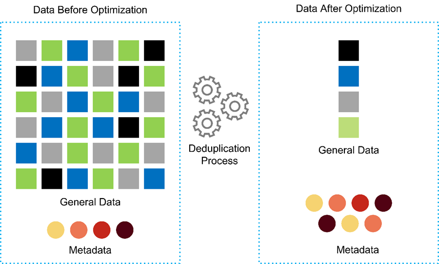

FlexPod 定义
FlexPod 定义
在 FlexPod 上部署基因组工作负载的优势
 建议更改
建议更改
本节简要列出了在 FlexPod 融合基础架构平台上运行基因组工作负载的优势。我们来快速介绍一下医院的功能。以下业务架构视图显示了一家医院在混合云就绪 FlexPod 融合基础架构平台上部署的功能。
-
* 避免医疗保健孤岛。 * 医疗保健孤岛是一个非常值得关注的问题。各个部门往往不是根据自己的选择而是按照演变过程有机地孤立到自己的一组硬件和软件中。例如，放射学，心脏病学， EHR ，基因组学， 分析，收入周期和其他部门最终会获得各自的一套专用软件和硬件。医疗保健组织拥有一组有限的 IT 专业人员来管理其硬件和软件资产。当这组人需要管理一组非常多样化的硬件和软件时，就会出现转折点。供应商为医疗保健组织提供的一系列流程不一致，使异构性变得更加糟糕。
-
* 从小规模入手，然后不断增长。 * GATK 工具套件专为 CPU 执行而设计，最适合 FlexPod 等平台。FlexPod 支持网络，计算和存储的独立可扩展性。从小规模入手，随着您的基因组功能和环境增长进行扩展。医疗保健组织无需投资专用平台即可运行基因组工作负载。相反，企业可以利用 FlexPod 等多种平台在同一平台上运行基因组学和非基因组工作负载。例如，如果儿科部门希望实施基因组学功能， IT 领导层可以在现有 FlexPod 实例上配置计算，存储和网络。随着基因组业务部门的发展，医疗保健组织可以根据需要扩展其 FlexPod 平台。
-
* 单一控制窗格和无与伦比的灵活性。 * Cisco Intersight 通过将应用程序与基础架构相连接，从裸机服务器和虚拟机管理程序到无服务器应用程序提供可见性和管理，从而显著简化 IT 运营，从而降低成本并降低风险。此统一 SaaS 平台采用统一的开放式 API 设计，可与第三方平台和工具本机集成。此外，它还允许您的数据中心运营团队在现场或任何位置使用移动应用程序进行管理。
用户可以利用 Intersight 作为管理平台，快速释放环境中的有形价值。Intersight 可以为许多日常手动任务实现自动化，从而消除错误并简化日常操作。此外，借助 Intersight 提供的高级支持功能，采用者可以提前解决问题并加快问题描述解决速度。综合来看，企业在应用程序基础架构上花费的时间和资金远远少于在核心业务开发上花费的时间和资金。
利用 Intersight 管理和 FlexPod 易于扩展的架构，企业可以在一个 FlexPod 平台上运行多个基因组工作负载，从而提高利用率并降低总拥有成本（ TCO ）。FlexPod 可以灵活地进行规模估算，从小型 FlexPod 快速计划开始，并可扩展到大型 FlexPod 数据中心实施。借助 Cisco Intersight 内置的基于角色的访问控制功能，医疗保健组织可以实施强大的访问控制机制，从而避免需要单独的基础架构堆栈。医疗保健组织内的多个业务部门可以将基因组作为一项关键核心能力。
最终， FlexPod 有助于简化 IT 运营并降低运营成本， IT 基础架构管理员可以将精力集中在帮助临床医生创新的任务上，而不是仅仅为了让他们保持正常运行。
-
经过验证的设计和有保障的结果。 * FlexPod 设计和部署指南经过验证，可以重复使用，其中涵盖了放心部署 FlexPod 所需的全面配置详细信息和行业最佳实践。Cisco 和 NetApp 经验证的设计指南，部署指南和架构可帮助您的医疗保健或生命科学组织从一开始就消除实施经验证且值得信赖的平台时的猜测。借助 FlexPod ，您可以加快部署速度，降低成本，复杂性和风险。FlexPod 经验证的设计和部署指南将 FlexPod 确立为各种基因组工作负载的理想平台。
-
* 创新与敏捷性。 * FlexPod 是 Epic ， Cerner ， Meditech 等 EHR 公司以及 Agfa ， GE ，飞利浦等成像系统的理想平台。有关的详细信息，请参见 "史诗般的荣誉卷" 和目标平台架构，请参见 Epic 用户 Web 。运行基因组学 "FlexPod" 让医疗保健组织能够灵活地继续其创新之旅。借助 FlexPod ，实施组织变革自然成为必然。当企业在 FlexPod 平台上实现标准化时，医疗保健 IT 专家可以为创新配置时间，精力和资源，从而实现生态系统所需的灵活性。
-
* 数据解放。 * 借助 FlexPod 融合基础架构平台和 NetApp ONTAP 存储系统，可以通过一个平台上的各种规模协议提供和访问基因组数据。采用 NetApp ONTAP 的 FlexPod 提供了一个简单，直观且功能强大的混合云平台。由 NetApp ONTAP 提供支持的 Data Fabric 可跨站点，跨物理边界和跨应用程序将数据集于一体。您的 Data Fabric 专为以数据为中心的环境中的数据驱动型企业而构建。数据在多个位置创建和使用，通常需要利用并与其他位置，应用程序和基础架构共享。因此，您需要采用一致且集成的方式来管理它。FlexPod 可以让您的 IT 团队掌控一切，并简化日益增加的 IT 复杂性。
-
* 安全多租户。 * FlexPod 使用符合 FIPS 140-2 的加密模块，因此，企业可以将安全性作为基本要素来实施，而不是事后考虑。无论平台大小如何， FlexPod 都支持企业从一个融合基础架构平台实施安全多租户。采用安全多租户和 QoS 的 FlexPod 有助于分离工作负载并最大程度地提高利用率。这有助于避免资本被锁定到可能未充分利用且需要专业技能集进行管理的专用平台中。
-
* 存储效率。 * 基因组学要求底层存储具有行业领先的存储效率功能。您可以利用 NetApp 存储效率功能降低存储成本，例如重复数据删除（实时和按需），数据压缩和数据缩减（ "ref"）。NetApp 重复数据删除可在 FlexVol 卷中提供块级重复数据删除。从本质上说，重复数据删除会删除重复的块，从而仅在 FlexVol 卷中存储唯一的块。重复数据删除的粒度较高，并在 FlexVol 卷的活动文件系统上运行。下图简要显示了 NetApp 重复数据删除的工作原理。重复数据删除是应用程序透明的。因此，可以使用它对使用 NetApp 系统的任何应用程序生成的数据进行重复数据删除。您可以将卷重复数据删除作为实时进程和后台进程运行。您可以将其配置为自动运行，计划运行或通过命令行界面， NetApp ONTAP System Manager 或 NetApp Active IQ Unified Manager 手动运行。

-
* 实现基因组互操作性。 * ONTAP FlexCache 是一种远程缓存功能，可简化文件分发，减少 WAN 延迟并降低 WAN 带宽成本 "ref"）。基因组变体识别和标注期间的一项关键活动是临床医生之间的协作。即使协作临床医生位于不同地理位置， ONTAP FlexCache 技术也能提高数据吞吐量。鉴于 * 。 bam 文件的典型大小（ 1 GB 到 100 GB ），底层平台必须能够向不同地理位置的临床医生提供文件。采用 ONTAP FlexCache 的 FlexPod 让基因组数据和应用程序真正实现了多站点就绪，让全球各地的研究人员可以无缝协作，实现低延迟和高吞吐量。在多站点环境下运行基因组学应用程序的医疗保健组织可以使用数据网络结构进行横向扩展，以平衡易管理性与成本和速度。
-
* 智能使用存储平台。 * 采用 ONTAP 自动分层和 NetApp Fabric Pool 技术的 FlexPod 可简化数据管理。FabricPool 有助于降低存储成本，而不会影响性能，效率，安全性或保护。FabricPool 对企业级应用程序是透明的，它可以降低存储 TCO ，而无需重新构建应用程序基础架构，从而充分利用云效率。FlexPod 可以从 FabricPool 的存储分层功能中受益，从而更高效地利用 ONTAP 闪存存储。有关详细信息，请参见 "采用 FabricPool 的 FlexPod"。下图简要概述了 FabricPool 及其优势。

-
* 更快的变体分析和标注速度。 * FlexPod 平台的部署和实施速度更快。FlexPod 平台可实现大规模数据可用，并提供低延迟和更高吞吐量，从而实现临床医生协作。增强的互操作性有助于创新。医疗保健组织可以并行运行基因组和非基因组工作负载，这意味着组织不需要专门的平台来开始其基因组学之旅。
FlexPod ONTAP 会定期为存储平台添加前沿功能。FlexPod 数据中心是部署 FC-NVMe 以允许需要高性能存储访问的应用程序的最佳共享基础架构基础。随着 FC-NVMe 不断发展，包括高可用性，多路径和额外的操作系统支持， FlexPod 非常适合作为首选平台，可提供支持这些功能所需的可扩展性和可靠性。ONTAP 通过端到端 NVMe 实现更快的 I/O ，从而加快完成基因组分析的速度（ "ref"）。
按顺序排列的原始基因组数据会产生较大的文件大小，因此，请务必将这些文件提供给变体分析器，以减少从样本收集到变体标注所需的总时间。NVMe （非易失性内存快速）用作存储访问和数据传输协议时，可提供前所未有的吞吐量水平和最快的响应时间。FlexPod 可在通过 PCI Express 总线（ PCIe ）访问闪存存储时部署 NVMe 协议。PCIe 支持实施数万个命令队列，从而提高了并行处理能力和吞吐量。从存储到内存的一个协议可以快速访问数据。
-
* 从零到零的灵活性进行临床研究。 * 灵活，可扩展的存储容量和性能使医疗保健研究组织能够以弹性或实时（ JIT ）的方式优化环境。通过将存储与计算和网络基础架构分离，可以在不中断的情况下纵向和横向扩展 FlexPod 平台。使用 Cisco Intersight ，可以使用内置和自定义自动化工作流来管理 FlexPod 平台。借助 Cisco Intersight 工作流，医疗保健组织可以缩短应用程序生命周期管理时间。当学术医疗中心要求将患者数据匿名化并提供给其研究信息学中心和 / 或质量中心时，其 IT 组织可以利用 Cisco Intersight FlexPod 工作流在数秒内（而不是数小时）执行安全数据备份，克隆和还原。借助 NetApp Trident 和 Kubernetes ， IT 组织可以配置新的数据科学家，并在几分钟内（有时甚至几秒钟内）为模型开发提供临床数据。
-
* 保护基因组数据。 * NetApp SnapLock 提供了一个专用卷，可在其中存储文件并将其置于不可擦除，不可重写的状态。用户驻留在 FlexVol 卷中的生产数据可以通过 NetApp SnapMirror 或 SnapVault 技术镜像或存储到 SnapLock 卷。在保留期限结束之前，无法删除 SnapLock 卷，卷本身及其托管聚合中的文件。使用 ONTAP FPolicy 软件，企业可以禁止对具有特定扩展名的文件执行操作，从而防止勒索软件攻击。可以为特定文件操作触发 FPolicy 事件。此事件与策略相关联，策略将调用需要使用的引擎。您可以为策略配置一组可能包含勒索软件的文件扩展名。如果具有不允许扩展名的文件尝试执行未经授权的操作，则 FPolicy 会阻止执行该操作 ("ref"）。
-
* FlexPod 合作支持。 * NetApp 和 Cisco 建立了 FlexPod 合作支持，这是一种强大，可扩展且灵活的支持模式，可满足 FlexPod 融合基础架构的独特支持要求。此模式结合了 NetApp 和 Cisco 的经验，资源和技术支持专业知识，可以简化识别和解决 FlexPod 支持问题的流程，而不管问题位于何处。下图概述了 FlexPod 合作支持模式。客户联系可能拥有问题描述的供应商， Cisco 和 NetApp 将合作解决此问题。Cisco 和 NetApp 拥有跨公司工程和开发团队，他们携手解决问题。此支持模式可减少翻译期间的信息丢失，建立信任并减少停机时间。